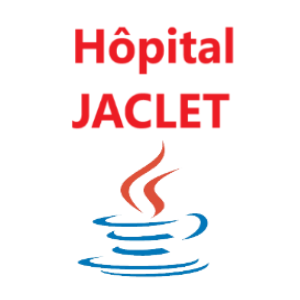
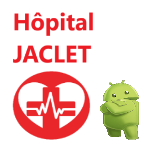
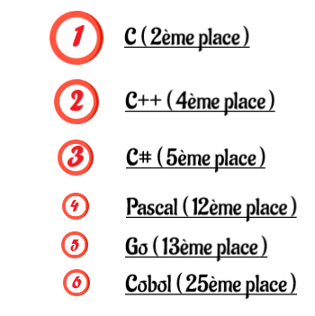
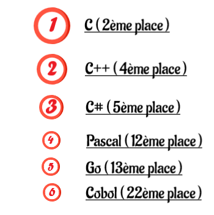
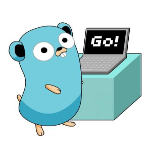
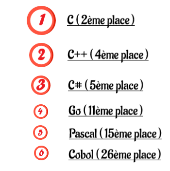
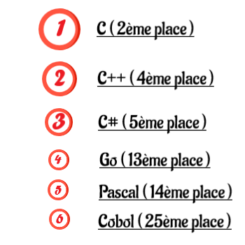

Elliot Infelta
Étudiant en BTS SIO option SLAM
Je suis développeur Back-end & Front-end
HTML / CSS / JavaScript
PHP / Symfony

Android
JAVA

WordPress

PrestaShop
Projets
En classe
Atelier Professionnelle
Agence VIZImmo - HTML/CSS/PHP
Première Année - Application WEB

Jaclet-Restauration - JAVA IHM
Seconde Année - Application Desktop
Jaclet-Séjour - Symfony
Seconde Année - Application WEB

Jaclet-Séjour - JAVA Android
Seconde Année - Application Mobile
Projets
En stage
Expériences Professionnelles
Proditex - Gestion de Commande
Première Année - Application WEB
Training N'Sales - WordPress
Seconde Année - Site Vitrine
Casa Dolce - PrestaShop
Seconde Année - Site E-Commerce
Les mains dans l'eau - WordPress
Seconde Année - Site Vitrine
Veille
Technologique
Les langages compilés
-

Les langages compilés en Avril 2022
Source TIOBE indexClassement mensuelle du mois de Avril 2022 sur l'utilisation des langages compilés et du Golang.
-

Les langages compilés en Mars 2022
Source TIOBE indexClassement mensuelle du mois de Mars 2022 sur l'utilisation des langages compilés et du Golang.
-

Patch note Go 1.18
Go.devRevu de la dernière mise à jour du Go (1.8) soit toutes les dernières améliorations, nouveautés et correctifs sur le Go.
-

Les langages compilés en Février 2022
Source TIOBE indexClassement mensuelle du mois de Février 2022 sur l'utilisation des langages compilés et du Golang.
-

Les langages compilés en Janvier 2022
Source TIOBE indexClassement mensuelle du mois de Janvier 2022 sur l'utilisation des langages compilés et du Golang.